The period from 400 - 1200 signified the dark ages in the history of mathematics. Little to no major accomplishments were made in Europe, those accomplishments that were made came mainly from the middle east. During this period we begin to see the emergence of difference equations, the following is a history of those equations and the mathematicians that influenced them.
The earliest major Indian mathematician was known as Brahmagupta. This mathematician introduced rules for solving simple quadratic equations of various types. He also invented a method for solving indeterminate equations of the second degree like the following:
a x2+1=y2
Brahmagupta was also the first person to publish a sinus table for any angle.
Brahmagupta's matrix is given as:
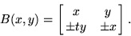
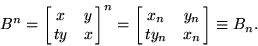
Mathematicians,
like Al-Karaji,
furthered the work on the algebra of polynomials to include those of infinite
terms. Al-Karaji also was the first to construct Pascal's
triangle, and although this relationship was
discovered independently by both the Persians and the Chinese in the eleventh
century, including a well-known written description by Omar Khayyam,
it is commonly mistakenly credited to its later European namesake.
Pascal's triangle
powers, namely the number, the thing and the square.
Khayyam's constuction for solving a cubic equation
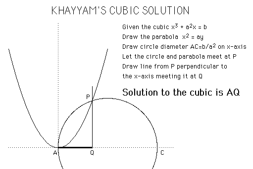
Pascal's triangle is a triangular shaped arrangement of binomial coefficients in which the first row (n=0) is 1, the second row (n=1) is 1 1, the third row (n=2) is 1 2 1, and to on until the (n + 1)th row, kth column is defined by (N!)/((K!) (N-K)!)
Further in this period the mathematician Bhaskara provided a proof of the Pythagorean theorem. His proof consisted of taking a square with a side of length C and dividing it into four equal triangles with sides of length A, B, and C, and a square with sides of length B-C (see below). He then set up the following relation of areas of the square:
(a+b) 2 = 4(.5ab) + c2 = a2 +
b2 + 2ab
it follows that c2 = a2 + b2
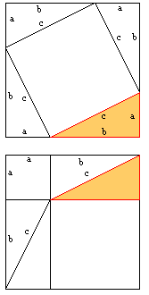
Bhaskara-Brouckner algorithm :
A sequence of approximations
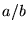
to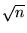
can be derived by factoring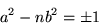 |
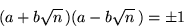 |
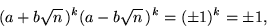 |
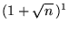 |
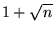 |
||
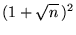 |
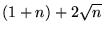 |
||
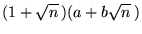 |
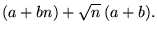 |
Therefore, a and b are given by the recurrence relations
with  .
The error obtained using this method is
.
The error obtained using this method is
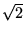
as 1, 3/2, 7/5, 17/12, 41/29, 99/70, ...The mathematician Al-Samawal
writes al-Bahir fi'l-jabr (The brilliant in algebra). He
develops algebra with polynomials using negative powers and zero. He solves
quadratic equations, sums the squares of the first n natural numbers,
and looks at combinatorial problems.
Al-Samawal furthered the work on Polynomial equations by being able
to find the roots of a polynomial as well as solutions to quadratic equations.
More importantly, he gave a full description of the binomial theorem with
the coefficients given by Pascal's triangle.
Perhaps one of the most remarkable achievements in Book 2 of al-Bahir
is al-Samawal's use of an early form of induction. What he does is to demonstrate
an argument for n = 1, then prove the case n = 2 based on
his result for n = 1, then prove the case n = 3 based on
his result for n = 2, and carry on to around n = 5 before
remarking that one can continue the process indefinitely. Although this
is not induction proper, it is a major step towards understanding inductive
proofs. We should also comment that he was not the first to use this form
of recursive reasoning, since al-Karaji had used similar methods. The result
which al-Samawal himself was most proud is
12 + 22 + 32 + ... + n2
= n(n+1)(2n+1)/6
which does not appear in earlier texts.
The mathematician Al-Tusi
also wrote on binomial coefficients, he was the first to find the roots
of the cubic equation. In order to do this he first took the equation
X3 + A = BX
where A and B are positive and noted that if t is a solution then
t 3 + A = Bt
since A > 0, t 3 < Bt so t < B.5
next he notes that BX - X3 = A
and he finds the maximum of Y = BX - X3 occurs at X = (B / 3).5 which makes
max (Y) = 2 (B/3)3/2
He then deduces that the equation has a positive root
D = (B3 / 27) + (A3 / 4) > 0.
where D is the discriminant. Later he expanded this solution to what
is now known the Ruffini-Horner approximation method.